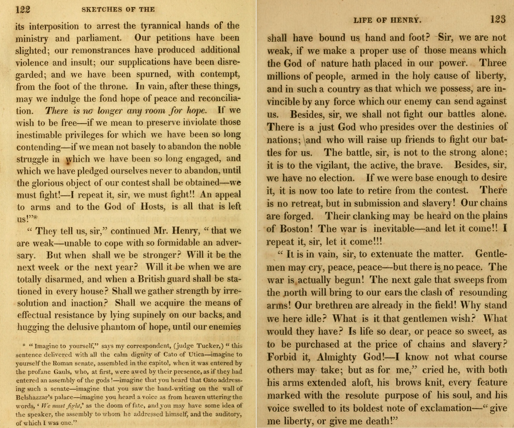

29:18 · 3 OPERE
Ma come? La cancelliera del cuore sapeva?
Il filo del discorso
Dr Divago riprende un proprio precedente commento al discorso di Angela Merkel del 9 dicembre 2020 e contesta l’uso pubblico dei numeri della pandemia. Al centro pone una distribuzione per età dei decessi segnalati al Robert Koch Institut, che confronta visivamente con curve storiche della mortalità. La sua tesi è che la somiglianza di andamento renda ingannevole l’allarme politico; la scheda chiarisce perché questa comparazione non dimostri l’assenza di morti aggiuntive né consenta di stabilire la causa di singoli decessi.
Leggi la sintesi completaRiduci la sintesi
Il discorso passa poi alla Svezia: Dr Divago dubita della traduzione delle parole del re, dichiara di non conoscere lo svedese e apprezza un articolo di Jonathan Jarry per McGill che invita a valutare un quadro complesso. Una classifica di decessi per milione viene quindi usata per difendere la strategia svedese. Nella parte finale, un confronto diffuso da Nancy Pelosi fra perdite belliche e vittime del Covid introduce nuovi calcoli sulla mortalità statunitense e un richiamo ironico a un racconto di Kafka. La conclusione ribadisce il primato attribuito alla libertà attraverso il motto di Patrick Henry ripreso da una vignetta. Il contributo rimane una polemica sulla comunicazione e sulle restrizioni, distinta da una verifica epidemiologica dei dati.
I libri nel discorso
Which Sweden Do You Want to Believe In?
Note sul riferimento
Illustrazione dell’articolo: McGill University, Office for Science and Society, 18 settembre 2020, Jonathan Jarry M.Sc. Articolo web con successiva correzione sul contact tracing. Illustrazione originale dell’articolo, non copertina libraria.
Immagine originale a due bandiere svedesi, una scura e una luminosa, pubblicata nella testata dell’articolo. Immagine della fonte indicata. Non è una copertina di libro e non mostra il grafico di mortalità usato dal relatore.
Titolo Which Sweden Do You Want to Believe In e McGill University, articolo di settembre 2020 espliciti; fonte verificata: Jonathan Jarry, 18 settembre.
Bambini sulla strada maestra (Kinder auf der Landstraße)
Note sul riferimento
Copertina della raccolta: Copertina della raccolta Contemplazione, Palingenia, I ponti, 2024, traduzione di Margherita Belardetti, nota di Roland Reuß, testo originale a fronte, 144 pagine; ISBN 9791281765009. Originale Betrachtung, uscito nel dicembre 1912 con frontespizio 1913.
Copertina autentica Palingenia della raccolta che comprende il racconto. L’edizione 2024 è successiva al discorso del 2020 e non viene attribuita al relatore. Non è una copertina autonoma del racconto.
Franz Kafka, Bambini sulla strada maestra, titolo esplicito e chiusa tedesca Wie könnten Narren müde werden.

Give Me Liberty or Give Me Death. Discorso alla Seconda Convenzione della Virginia
Identificazione probabile
Note sul riferimento
Facsimile del testo ricostruito: Facsimile delle pagine 122–123 di William Wirt, Sketches of the Life and Character of Patrick Henry, seconda edizione, 1818, conservate dalla Library of Virginia. Discorso tenuto nel 1775, ricostruito da Wirt per la biografia 1817; non verbale contemporaneo.
Riproduzione autentica delle due pagine 122–123, con chiusa del discorso leggibile a destra. Non è un manoscritto di Henry, una copertina o la vignetta del video. La ricostruzione tarda e l’incertezza sulle esatte parole pronunciate sono dichiarate dall’archivio.
Datemi la libertà o datemi la morte, motto rivoluzionario in una vignetta; rinvio probabile al discorso di Patrick Henry, nome non pronunciato.